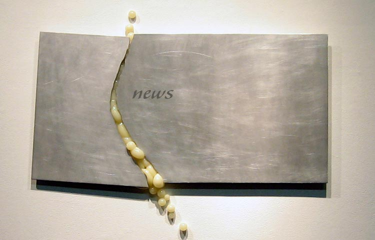

work
shifting
combat
bulge
bump
crack
reaching
orange
phenomenon
red dot
hatch
walk light
occupancy
evolve
brood
b.s.1.236
every city has a Southside

24 DALLAS OBSERVER, JANUARY 20 - 26, 2001.
THREE ARTISTS X THREE DECADES
"It's difficult to believe that 500X Gallery of Dallas, TX is 33 years old. The Exposition Park arts venue has hung in through trends and trials and remained a vibrant hub of local work, never seeming to age - save for whatever the art gallery equivalent of a little distinguished gray around the temples might be. In celebration, Leslie Murrell has curated "Imprints: Three Generations of 500X" . . . Natalie Macellaio, who mimics on the wall, the gallery's own cracks in the floor, but in precious silver. She's taken the old or the worn and made it new and more beautiful - because it's not that it wasn't already. Trying to honor a certain time is often kitschy in a time-capsule way, but Murrell and her three artists have skillfully exposed the imprints they've contributed to 500X, and that 500X has made on them... and us."
Dallas Museum of Art - C3 - Center for Creative Connections - Visiting Artists.
See differently. See unexpectedly. See art in a new way.
July 2010: Natalie Macellaio was asked to be a C3 Visiting Artist for four sessions in July, 2010.
Museum visitors can meet and work with visiting artits to celebrate creativity and the artistic process. Each featured artist participates in a variety of public programs providing opportunities for conversation and hands-on art-making projects. Natalie combines the materials and techniques of a metalsmith with alternative materials such as resin, plastic, and guitar strings to push the boundaries of sculpture and installation. Her influence of the natural world becomes layered and parallels the emotional experiences with barriers and relationships. Natalie has been asked to sell her work in the Musuem Store of the DMA.
Feature Atist - PARTICIPATORY SPORT FOR CRAFT ARTISTS. http://crafthaus.ning.com
July 2010: Natalie Macellaio was one of four featured artists on the website crafthaus.ning.com.